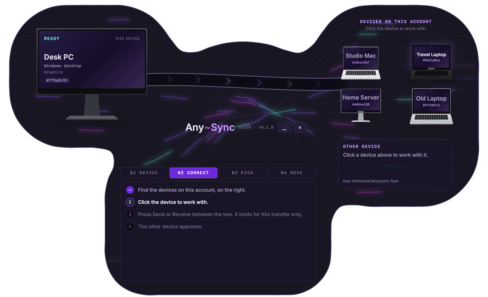
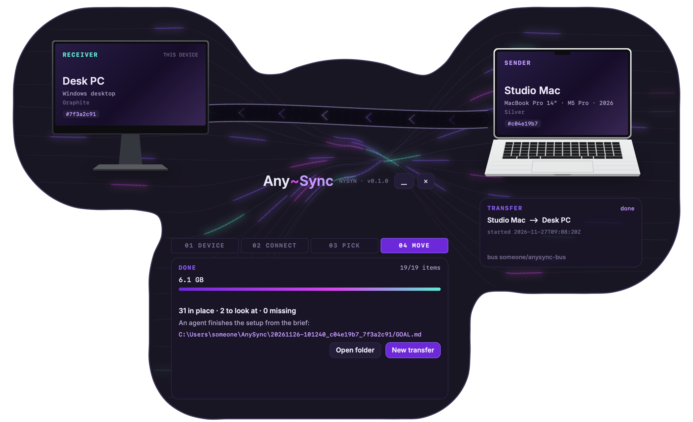

Her cihaz kendini çizer
Cihaz sekmesinde bu bilgisayarı adlandırır ve nasıl çizileceğini seçersin: bir Mac modeli, bir Windows masaüstü ya da laptop, ya da dağıtımının adı küçük bir rozette yazan bir Linux makinesi. Çizimlerin hepsi özgün şekiller; şirket logosu yok.

Hesabındaki cihazlar
Bu hesaptaki cihazları bul, bus deponda kayıtlı her bilgisayarı, hangi sistemde olursa listeler. Birini seç, göndermeyi ya da almayı seç; diğer cihaz sahibinin onaylayacağı ya da reddedeceği bir istek gösterir.

Uyana göre sunulur
Gönderen elindekini tarar. Alan taraf bunu türlere göre gruplanmış bir ağaç olarak görür; her öğe bu sistemde nereye ineceğini ya da burada yeri olmadığını söyler. Bir grubu işaretlemek içindeki her şeyi işaretler.

Doğrudan, ve kaldığı yerden sürer
Yalnızca seçilenler gider; ağın üzerinden cihazdan cihaza, doğrulanmış bir XChaCha20-Poly1305 akışıyla. Bir dakika hiç bayt gelmezse bağlantı kopmuş sayılır ve alan taraf gelmeyenleri yeniden ister.

Ajanının iş yapabileceği bir not
Her öğe bu sistemin onu tuttuğu yere iner; orada olan .before-anysync olarak saklanır. Sonra alan taraf GOAL.md'yi yazar: neyin nereye indiği, sorunlar, değişecek eski ev klasörü yolları ve kurulacak araç listeleri. Mac'te ayrıca Apple'ın komut satırı araçları, Homebrew ve Node için bir hazırlık betiği yazar.
